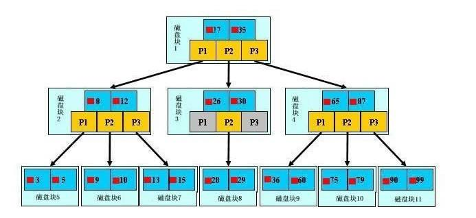
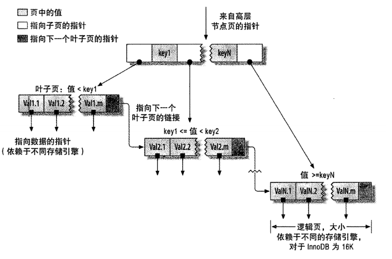
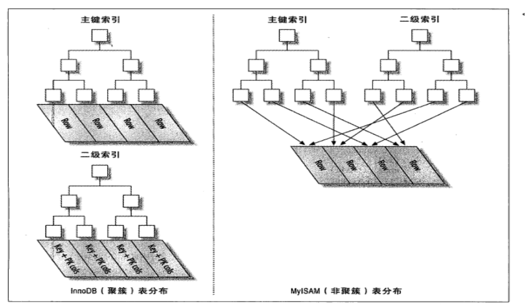
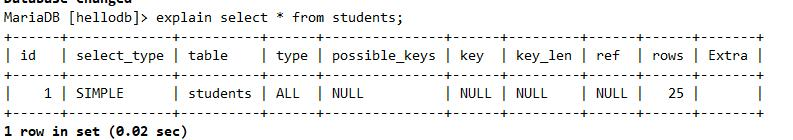
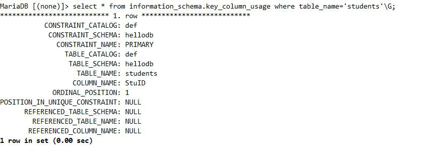
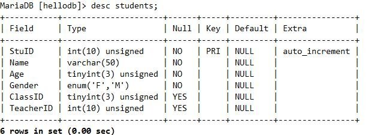

索引
索引：是特殊数据结构，定义在查找时作为查找条件的字段，在MySQL又称为键key，索引通过存储引擎实现
优点：
索引可以降低服务需要扫描的数据量，减少了IO次数
索引可以帮助服务器避免排序和使用临时表
索引可以帮助将随机I/O转为顺序I/O
缺点：
占用额外空间，影响插入速度
索引类型：
B+TREE、HASH、R TREE
聚簇（集）索引；非聚簇索引：数据和索引是否存储在一起
主键索引、二级（辅助）索引
稠密索引、稀疏索引：是否索引了每一个数据项
简单索引、组合索引
左前缀索引：取前面的字符做索引
覆盖索引：从索引中即可取出要查询的数据，性能高
B+ Tree索引

B+ Tree索引顺序存储，每一个叶子节点到根结点的距离是相同的；左前缀索引，适合查询范围类的数据
可以使用B+Tree索引的查询类型：
全值匹配：精确所有索引列，如：姓wang，名xiaochun，年龄30
匹配最左前缀：即只使用索引的第一列，如：姓wang
匹配列前缀：只匹配一列值开头部分，如：姓以w开头的
匹配范围值：如：姓ma和姓wang之间
精确匹配某一列并范围匹配另一列：如：姓wang,名以x开头的
只访问索引的查询

B+Tree索引的限制：
如不从最左列开始，则无法使用索引，如：查找名为xiaochun，或姓为g结尾
不能跳过索引中的列：如：查找姓wang，年龄30的，只能使用索引第一列
如果查询中某个列是为范围查询，那么其右侧的列都无法再使用索引：如：姓wang,名x%,年龄30，只能利用姓和名上面的索引
特别提示：
索引列的顺序和查询语句的写法应相匹配，才能更好的利用索引
为优化性能，可能需要针对相同的列但顺序不同创建不同的索引来满足不同类型的查询需求
Hash索引
Hash索引：基于哈希表实现，只有精确匹配索引中的所有列的查询才有效，索引自身只存储索引列对应的哈希值和数据指针，索引结构紧凑，查询性能好
Memory存储引擎支持显式hash索引，InnoDB和MyISAM存储引擎不支持
适用场景：只支持等值比较查询，包括=, <=>, IN()
不适合使用hash索引的场景 不适用于顺序查询：索引存储顺序的不是值的顺序 不支持模糊匹配
不支持范围查询
不支持部分索引列匹配查找：如A，B列索引，只查询A列索引无效
空间索引（R-Tree）：
MyISAM支持空间索引，可以使用任意维度组合查询，使用特有的函数访问，
常用于做地理数据存储，使用不多
全文索引(FULLTEXT)
在文本中查找关键词，而不是直接比较索引中的值，类似搜索引擎
InnoDB从MySQL 5.6之后也开始支持
聚簇索引与非聚簇索引
聚簇索引:
顺序结构与数据存储物理结构一致的一种索引，并且一个表的聚簇
索引只能有唯一的一条。MyISAM不支持聚簇索引。
非聚簇索引
记录的物理顺序与逻辑顺序没有必然的联系，与数据的存储物理结构没有关系；一个表对应的非聚簇索引可以有多条，根据不同列的约束可以建立不同要求的非聚簇索引；

索引优化策略：
独立地使用列：尽量避免其参与运算，独立的列指索引列不能是表达式的一部分，也不能是函数的参数，在where条件中，始终将索引列单独放在比较符号的一侧
左前缀索引：构建指定索引字段的左侧的字符数，要通过索引选择性来评估 索引选择性：不重复的索引值和数据表的记录总数的比值
多列索引：AND操作时更适合使用多列索引，而非为每个列创建单独的索引
选择合适的索引列顺序：无排序和分组时，将选择性最高放左侧
索引优化建议
只要列中含有NULL值，就最好不要在此例设置索引，复合索引如果有NULL值，此列在使用时也不会使用索引 尽量使用短索引，如果可以，应该制定一个前缀长度
对于经常在where子句使用的列，最好设置索引
对于有多个列where或者order by子句，应该建立复合索引
对于like语句，以%或者‘-’开头的不会使用索引，以%结尾会使用索引
尽量不要在列上进行运算（函数操作和表达式操作）
尽量不要使用not in和<>操作
管理索引
只是创建一个单纯的索引，那么它则只是一个"索引"
创建索引：
create index index_name ON tbl_name (
index_col_name[(length)],
...
);
示例：
create index index_name on test (id(2)); #取字段左边2个字节作为索引
create index index_name on test (id)
联合索引
create index index_name on testtb1 (id,name);
查看帮助
help create index;
修改索引
alter table ll add index index_name(name);
删除索引：
drop index index_name ON tbl_name;
alter table tbl_name drop index index_name;
查看索引：
show index from tb_name;
show index from testtb where key_name like 'ind%';
优化表空间：
OPTIMIZE TABLE tb_name;
查看索引的使用
SET GLOBAL userstat=ON;
SHOW index_STATISTICS;
explain
通过EXPLAIN来分析索引的有效性
EXPLAIN SELECT clause
获取查询执行计划信息，用来查看查询优化器如何执行查询
输出信息说明：
[参考]https://dev.mysql.com/doc/refman/5.7/en/explain-output.html
id: 当前查询语句中，每个SELECT语句的编号
复杂类型的查询有三种：
简单子查询
用于FROM中的子查询
联合查询：UNION
注意：UNION查询的分析结果会出现一个额外匿名临时表
select_type：
简单查询为SIMPLE
复杂查询：
SUBQUERY 简单子查询
PRIMARY 最外面的SELECT
DERIVED 用于FROM中的子查询
UNION UNION语句的第一个之后的SELECT语句
UNION RESULT 匿名临时表
table：SELECT语句关联到的表

type：关联类型或访问类型，即MySQL决定的如何去查询表中的行的方式，以下顺序，性能从低到高
ALL: 全表扫描
index：根据索引的次序进行全表扫描；如果在Extra列出现“Using index” 表示了使用覆盖索引，而非全表扫描
range：有范围限制的根据索引实现范围扫描；扫描位置始于索引中的某一点，结束于另一点
ref: 根据索引返回表中匹配某单个值的所有行
eq_ref：仅返回一个行，但与需要额外与某个参考值做比较
const, system: 直接返回单个行
possible_keys：查询可能会用到的索引
key: 查询中使用到的索引
key_len: 在索引使用的字节数
ref: 在利用key字段所表示的索引完成查询时所用的列或某常量值
rows：MySQL估计为找所有的目标行而需要读取的行数
Extra：额外信息
Using index：MySQL将会使用覆盖索引，以避免访问表
Using where：MySQL服务器将在存储引擎检索后，再进行一次过滤
Using temporary：MySQL对结果排序时会使用临时表
Using filesort：对结果使用一个外部索引排序
约束
主键：primary key，表上一个或多个字段的组合，填入主键字段中的数据，必须不同于已经存在的其它行的相同字段上的数据，而且也不能为空；一个表只能存一个主键，一个主键可以由多个字段组成；
惟一键：unique key，表上一个或多个字段的组合，填入其中字段中的数据，必须不同于已经存在的其它行的相同字段上的数据，但可以为空；一个表可以有多个唯一键；
外键：foreign key，一个表中的外键字段中所能够插入的数据取值范围，取决于引用的另一个表上主键字段上的已经存在数据集合；
非空约束
设置非空字段
alter table test modify 字段名 varchar(10) not null;
删除非空约束
alter table test modify 字段名 varchar(10) null;
自动增长
为字段设置自动增长，同样既可以使用change，也可以使用modify
alter table test modify 字段名 int auto_increment;
alter table test change 字段名 字段名 int auto_increment;
删除自动增长
alter table test change 字段名 字段名 int;
alter table test modify 字段名 int;
主键约束
添加
alter table test add primary key(字段名);
alter table test add constraint primary key(字段名);
删除：不能直接删除主键，需要先删除其关联自动增长或外键，然后再删除主键
alter table test drop primary key
唯一键约束
添加 :唯一键的名称默认为字段名称
alter table test add unique key(字段名);
alter table test add unique key uni_t(字段名); 指定名称为uni_t
删除
alter table testtb drop index uni_t
外键约束
添加：在test1表中创建一个新的字段，tid，并且添加了一个外键，外键的名称叫test1_fk，外键中，test1表中的tid字段引用了表test2表中的id字段
alter table testtb add column tid int default 0 not null;
alter table testtb add constraint test1_fk foreign key(tid) references test2(id);
删除：删除外键，必须先查询到对应外键的名称，根据外键名称删除即可。
alter table test4 drop foreign key test_fk
查看约束
查看students表的外键（查看主外键对应关系）
select TABLE_NAME,COLUMN_NAME,CONSTRAINT_NAME,REFERENCED_TABLE_NAME,REFERENCED_COLUMN_NAME from information_schema.KEY_COLUMN_USAGE where TABLE_NAME = 'students' and REFERENCED_TABLE_NAME is not null;
查看students表的主键被那些表引用为外键
select TABLE_NAME,COLUMN_NAME,CONSTRAINT_NAME,REFERENCED_TABLE_NAME,REFERENCED_COLUMN_NAME from information_schema.KEY_COLUMN_USAGE where REFERENCED_TABLE_NAME='students';
查看主键，查看外键，查看唯一键
select * from information_schema.key_column_usage where table_name='students'\G;

查看的主键
desc students;
